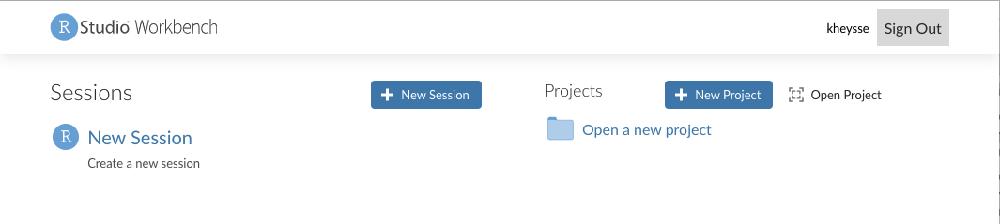
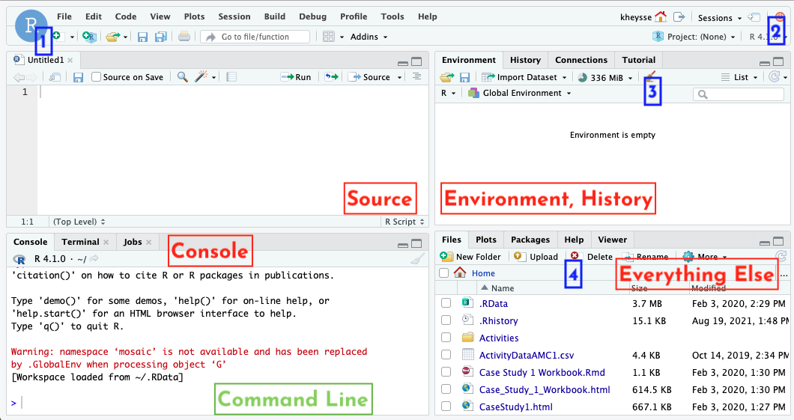

R Studio Orientation
In our class, we will be using RStudio, a developing environment commonly used for modeling and statistics. In real world mathematics, you will need to be able to work with data and apply your calculus concepts directly. That’s what we’ll do in RStudio, as it provides an excellent sandbox for us to play in. R (what RStudio is based on) is the programming language used by professional statisticians, so these skills will be useful no matter what field you go into!
However, just like any programming language, there is a startup cost. The learning curve for RStudio can be pretty steep, particularly if you’ve never done any coding before. Don’t worry, that’s where this guide comes in! In here you’ll find all sorts of explanation and examples for some of the coding we’ll be doing in (and out of) class. I promise, it’ll be worth in the end, and you’ll be a coding master.
Getting Oriented
First login
You’ll get into RStudio via the url https://rstudio.macalester.edu. It’s linked in our Moodle page if you’re feeling a little lazy. Your login is your Macalester username and password. You’ll be given the following page (with your username in the uppper right corner):

I tend to ignore the projects and just activate a new session by clicking that panel.
The RStudio window
Once you’ve got an active session, you’ll be shown the following window. We’ll talk about its parts, starting with the four panels you’ll see. This picture is from a previous version of RStudio, but everything should work the same!

Panels
- Source: This is where you will edit RMarkdown notebooks, which are described much more in the RMarkdown section.
- Console: This is RStudio’s command line. It’s a great place to test code and serves as a basic calculator.
- Environment, history: this panel keeps track of your work. The environment tab shows all the variables you have named in the session (including data, functions, and lists) and gives you a preview of them. The history tab tracks the pieces of code you run.
- Everything else: this is where you’ll find a lot of stuff, including the files you build and the plots you create of data/functions. It also has the packages list (described in the next subsection) and the help window, which can show you documentation of commands.
Now that we know what we’re looking at, let’s talk specifics. We’ll talk a lot more about the source panel in the RMarkdown section.
Specific functions
- The new document button. This is how you’ll make new files in your source window.
- The quit session button. Somtimes it’s best to just start over if you can’t figure out why something it not working. You’ll be kicked back to that first page from the previous section.
- The clean environment button. Use this when you want to clear all you variables, including data sets.
- The files buttons. You’ll use these to create, delete, and organize RMarkdown files and data files. See the data section for more information on how to upload data.
Command Line Console
The command line console is the most basic way to run code. It’s great for simple calculations and to test out code before you run it. We’ll run longer blocks of code in our notebooks. You can try out a few calculations here.
Notice! Once you run a command (by pressing enter) it is gone to history. You don’t go back and edit previous lines if you find a mistake. Instead, you run the command again with the fixed piece in a new line. Thankfully, RStudio makes this not so terrible. By pushing the UP button on your keyboard, you can scroll through previous commands that you’ve used.
Packages
RStudio is open source, which means many people write packages to augment what it can do by default. Their work is our gain, and we’ll need a few packages to be able to access what we want. In the lower right hand panel click on the packages tab. Then click on the check boxes next to the following packages:
- mosaic, mosaicCore, mosaicData: these contain the specific built-ins which create and plot functions for us. By checking the box by them, we import their functions into the session. Easy enough.
- mosaicCalc: Some of the function commands from the mosaic family of packages don’t interact well with the built in derivative and antiderivative functions in RStudio. mosaicCalc fixes this
- If you don’t see mosaicCalc, then you need to download it. Run the following line of code in your console:
install.packages("mosaicCalc")Once you do this, make sure that the mosaicCal box is checked in the packages list
- If you don’t see mosaicCalc, then you need to download it. Run the following line of code in your console:
- tinytex: this package allows you to create PDF documents from your RMarkdown files. To make sure that tinytex in installed, run the following line of code in your console:
tinytex::install_tinytex()## RMarkdown
In AMC1, we’ll be working with code a lot: writing it, running it, analyzing it, and commenting on it. We’ll also be going back to code we’ve already used and tweaking it to solve new but related questions. For all of these reasons, we’re going to use RMarkdown notebooks. The notebook will run large chunks of code at a time and show the output right next to the code. It’s also easier for you to comment on the code you’ve written and go back to it later.
The best way to get working on this is to upload the template that I’ve put in the course Moodle page and just start experimenting with what’s there. I’m sure you’ll get it sorted!